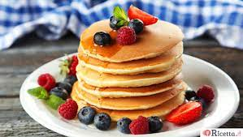

Pancakes

Description
Learn a skill for life with our foolproof
crêpe recipe that
ensures perfect pancakes every time
Ingredients
- 100g plain flour
- 2 eggs
- 300ml milk
- 1 tbsp sunflower or vegetable oil
Steps
- Put 100g plain flour, 2 large eggs,
300ml milk, 1 tbsp sunflower or vegetable
oil and a pinch of salt into a bowl or
large jug,
then whisk to a smooth batter.
- Set aside for 30 mins to rest if you have time,
or start cooking straight away.
- Set a medium frying pan or crêpe pan over
a medium heat and carefully
wipe it with some oiled kitchen paper.
- When hot, cook your pancakes for 1 min on
each side until golden,
keeping them warm in a low oven as you go.
- Serve it with your favourite filling.